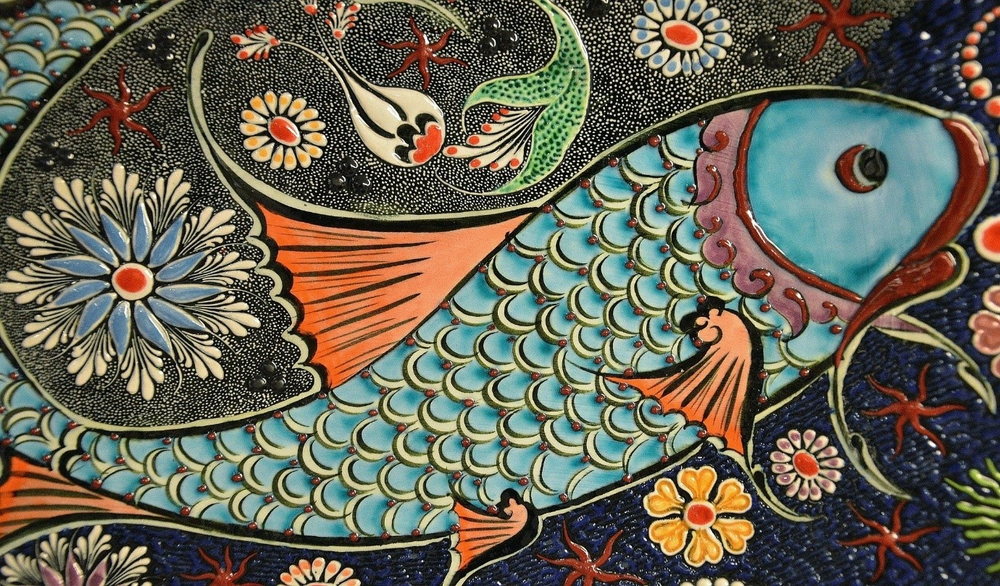
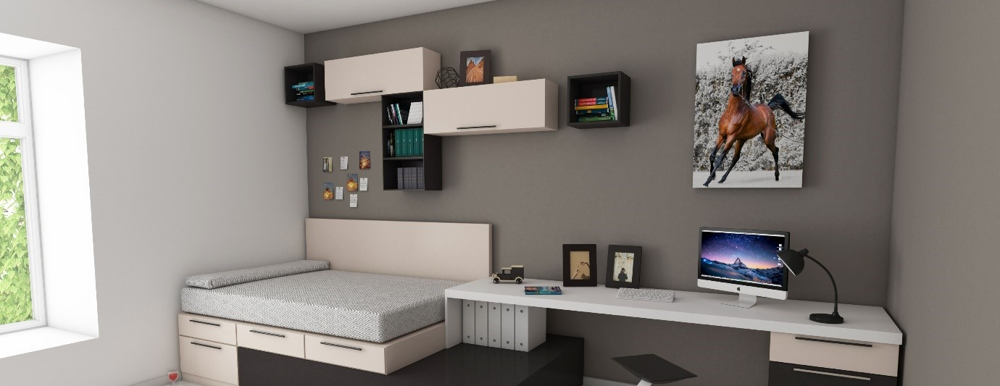
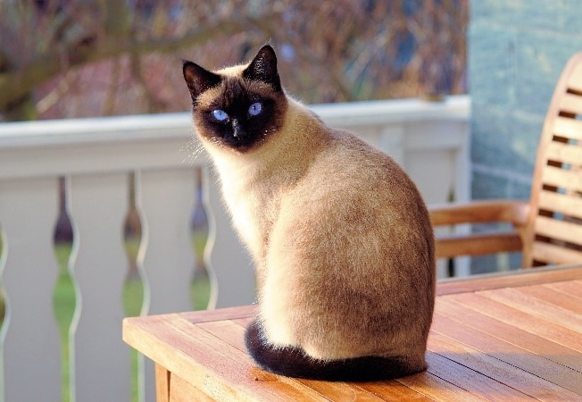
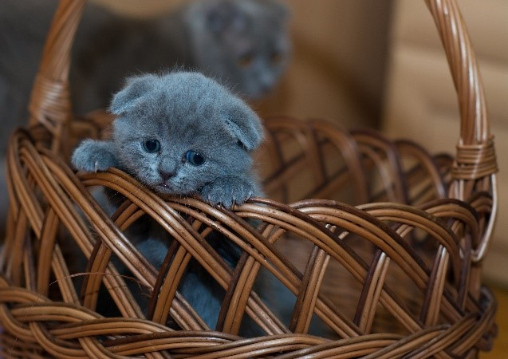

La broderie diamant c'est quoi ? Notre explication
Broderie diamant ! Si c’est la première fois que vous entendez ce terme, vous
devez vous dire sûrement la broderie diamant c’est quoi. Et bien on vous donne
l’explication dans cet article.🙂 La broderie diamant ou encore « Diamond Painting
», en anglais, est une nouvelle activité créative qui a pris le monde d'assaut, en
particulier les amateurs de bricolage. Les artistes du monde entier sont tombés
amoureux de cet exercice car il est facile à apprendre et incroyablement
déstressant.

Broderie diamant c'est quoi en fait ?
La broderie diamant est une forme d'art ludique relativement nouvelle dans le
secteur de l'artisanat, l'art du diamant est rapidement devenu le favori des
amateurs débutants et expérimentés. Il ne nécessite aucune compétence particulière
et tout le monde peut réaliser de magnifiques œuvres d'art qui brillent,
scintillent et resplendissent lorsqu'on les peignent avec des diamants. Pour se
faire il suffit juste de fixer des strass ( les diamants) en résine aux couleurs
vives sur une toile autocollante avec un kit de broderie diamant. La toile est
imprimée avec le motif ainsi que des symboles pour vous permettre de savoir
exactement quelle couleur placer à chaque endroit. Facile non ?🙂
Pourquoi vous devriez essayer un kit de broderie diamant
La broderie diamant vous intrigue mais vous n'êtes pas sûr que ce soit le métier
ou le passe-temps qui vous convienne ? Ne vous inquiétez pas ! Nous vous
présentons une liste des nombreux bénéfices de la broderie diamant pour la santé
mentale, émotionnelle et intellectuelle qui vous donneront raison d'essayer.
- C'est super relaxant😌
Passez quelques minutes à la broderie diamant et tous vos soucis et votre
stress disparaîtront.
- Entraînez votre cerveau à se concentrer
La broderie diamant est l'approche la plus idéale pour garder votre esprit
occupé par des pensées et des idées créatives.
- Utile pour les apprenants moyens
Faire de la broderie avec des diamants est exceptionnellement utile pour les
jeunes qui sont des étudiants modérés et qui souffrent d'un quelconque problème
mental.
- Améliorez votre productivité
Lorsque vous rangez votre travail et faites une courte pause, et que vous en
profitez pour appliquer de minuscules diamants colorés sur une toile, vous
permeez à votre cerveau de se recentrer. Ce processus vous motive à faire plus
et mieux avec un esprit clair et concentré.
- Vous obtenez une œuvre d'art que vous pouvez exposer
La broderie diamant vous offre la possibilité de créer une magnifique œuvre
d'art que vous pourrez exposer dans votre maison, réalisée par vous-même.
- Source de discipline
La broderie diamant vous aide à atteindre votre objectif. Elle pourrait devenir
votre source secrète pour maintenir la discipline, la patience et l'endurance.
- Augmenter vos cercles sociaux
Il existe des groupes de broderie diamant partout - Facebook, Twitter et
Flickr, pour n'en citer que quelques-uns. C'est un sentiment incroyable d'avoir
les mêmes passe-temps.
- Se détacher de la technologie👩💻
En commençant à peindre des diamants, il n'y a pas un seul écran en jeu, pas de
stimulation nécessaire de la technologie !
Broderie diamant, mode d'emploi et tutoriel
Maîtriser les bases est un jeu d'enfant, et les personnes de tous âges et de tous
niveaux peuvent créer des œuvres d'art à couper le souffle. Si vous débutez,
suivez ce petit tuto et vous aurez une œuvre d'art brillante que vous aurez
réalisé vous-mêmes.

L'achat d'un kit dans notre boutique est la meilleure façon de commencer, car tout
ce dont vous avez besoin est inclus dans le kit : un stylo, un tampon de cire, un
plateau, une pince, des strass. Ce guide d'aide simple en six étapes, vous
permettra de maîtriser les bases et apprendre la broderie diamant en quelques
minutes.
- Première étape
Retirez le film protecteur transparent de la toile pré-imprimée.
- Deuxième étape
Choisissez sur la toile le symbole sur lequel vous souhaitez travailler.
- Troisième étape
Faites correspondre le symbole avec le code de couleur de diamant correspondant
à l'aide du tableau sur la toile, puis trouvez le sac de diamant correct.
- Quatrième étape
Enfoncez la pointe de stylo dans la colle.
- Cinquième étape
Touchez le stylo sur le côté facetté d'un diamant pour le ramasser.
- Sixième étape
Alignez le diamant avec son symbole correspondant sur la toile et appuyez
légèrement pour le mettre en place.
C'est aussi simple que cela ! Répétez ces étapes jusqu'à ce que vous ayez placé
des diamants de couleur sur tous les symboles correspondants du tableau, et vous
obtiendrez une pièce finale éblouissante. Avec Broderie Diamant, le processus de
création est sans stress car nous ne vendons que des kits d'art diamantaire de
qualité supérieure qui comprennent tout ce dont vous avez besoin pour commencer.
Diamants carrés ou Diamants ronds
Vos diamants sont peut-être la partie la plus importante de votre kit, alors
faites attention à ne pas les perdre. La plupart des peintres de diamants
conservent les diamants supplémentaires qu'ils possèdent au cas où ils auraient
besoin de les utiliser sur une autre toile à l'avenir.


Dans la broderie diamant, il existe deux types de diamants différents : les
diamants carrés⬛ et les diamants ronds⚫. Certaines personnes aiment alterner les
projets réalisés avec des diamants carrés et ronds, tandis que d'autres ont une
préférence. Les diamants carrés créent davantage une mosaïque car les bords
s'emboîtent parfaitement, ne laissant aucun espace blanc entre les perles. Les
diamants ronds, en revanche, sont circulaires et ne peuvent donc jamais recouvrir
entièrement la toile. Pour certaines personnes, cela peut être gênant, car elles
préfèrent l'aspect complet des toiles de diamants carrées. Mais les diamants ronds
sont excellents car ils donnent l'apparence du point de croix et beaucoup
affirment qu'ils sont plus faciles pour les débutants et les projets de petite
taille.
Si vous n'avez jamais essayé l'un ou l'autre type de peinture au diamant, essayez
les deux et voyez lequel vous préférez. Vous pouvez investir dans des kits avec
des toiles plus petites, pour ne pas avoir à vous engager dans un grand projet dès
votre premier essai. L'artisanat est un excellent passe-temps pour libérer votre
créativité et améliorer votre santé mentale en réduisant les sentiments de stress
et d'anxiété. C'est aussi un bon moyen de gain de confiance.
Différence entre la broderie 3d et la broderie 5d
Les débutants dans la broderie diamant peuvent souvent être confus quant à la
signification et aux différences entre les kits 3d et 5d. Nous vous donnons une
brève explication afin que vous puissiez comprendre les différences entre ces deux
types de kits. Et que lors de votre prochain achat, vous soyez en mesure de
prendre une décision éclairée.
La broderie diamant 3d
La broderie diamant 3d consiste à placer de minuscules strass ou diamants
(également appelés perles) sur une toile numérotée ou vierge. Les strass mesurent
environ 2,5 x 2,5 mm Les broderies diamants 3D sont composées de strass présentant
un total de 9 facettes - 3 de chaque côté.
La broderie diamant 5d
La broderie diamant 5d consiste à travailler avec des strass comportant 5 facettes
de chaque côté, soit un total de 15 facettes. Par conséquent, ces strass ont
tendance à avoir plus d'éclat puisqu'il y a plus de facettes et donne au projet
fini plus de profondeur.
Conclusion
La broderie au diamant est un passe-temps connu pour être divertissant et
apaisant. Quel que soit votre niveau de compétence, une toile et un kit adaptés
sont à votre disposition. Le projet terminé impressionnera et inspirera tous ceux
qui le verront, à commencer par vous-mêmes.